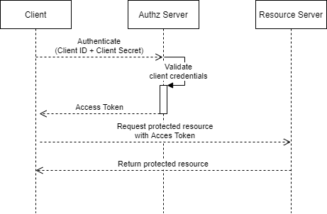

This post demonstrates how to utilize OAuth2 in Faust
Streaming applications. Faust is a
streaming library for Python. It provides stream/event processing primitives a
la Kafka Streams to process Kafka messages in Python.
Organizations are utilizing OAuth2 for managing federated identities across
service boundaries a centralized manner. With the introduction of the
OAUTHBEARER SASL mechanism in Kafka 2.0.0, both brokers and clients can be
configured to use an external identity provider for authentication, making it
easier to manage identities than span across systems.
Authorization in Kafka
Apache Kafka provides an Authorization system based on Access Control Lists
(ACLs). Kafka acls are defined in the general format of "Principal P is
[Allowed/Denied] Operation O From Host H On Resource R". You can read more
about the acl structure on
KIP-11.
In addition to SSL encryption, Kafka supports multiple authorization
mechanisms via the Simple Authentication and Security Layer (SASL) to enable
authentication via third-party servers. This enables Kafka clusters to utilize
industry-standard identity providers for all broker and client authentication
requests.
Confluent Cloud currently supports the following authorization mechanisms:
GSSAPI (Kerberos)PLAIN (Username/Password)SCRAM-SHA (Zookeeper)OAUTHBEARER (OAuth server)
See the Confluent documentation on Enabling SASL SSL for
Kafka
for more information.
The OAUTHBEARER security mechanism enables a Kafka cluster to utilize a
third-party identity provider for authentication. In the case of Confluent
Cloud, setting up an external identity provider is very straight forward,
assuming you're using an OIDC-compliant identity provider (e.g. Azure AD, Okta,
Keycloak). See the
documentation
for more information
OAuth2/OIDC Authorization

OAuth2 in Faust Streaming
Here's an example of a streaming application demonstrating how to connect to a
Kafka broker over PLAINTEXT, essentially anonymous and unencrypted. Our
client is assuming all messages adhere to the Order schema.
import faust
app = faust.App("myapp", broker="kafka://localhost")
class Order(faust.Record):
account_id: str
amount: int
@app.agent(value_type=Order)
async def order(orders):
async for order in orders:
print(f"Order for {order.account_id}: {order.amount}")
Faust recently introduced a new authorization mechanism to support
OAUTHBEARER authentication in v1.5.0, enabling Faust Streaming workers to
authenticate to a Kafka broker configured with an identity provider using
OAuth2 Bearer tokens.
Using OAUTHBEARER broker credentials requires that we setup at least a
default SSL context, and provide an instance of AbstractTokenProvider to the
faust.App during configuration. The new faust.OAuthCredentials class
supports a single oauth_cb attribute for an instance of
AbstractTokenProvider, which is a class with a single asynchronous method for
retrieving the bearer token. Clients are responsible for managing the entire
token life cycle, such as handling token refreshes, etc.
import faust
from aiokafka.conn import AbstractTokenProvider
from aiokafka.helpers import create_ssl_context
class CustomTokenProvider(AbstractTokenProvider):
async def token(self):
...
broker_credentials = faust.OAuthCredentials(
oauth_cb=CustomTokenProvider(),
ssl_context=create_ssl_context(),
)
app = faust.App(
"myapp",
broker=KAFKA_BROKER,
broker_credentials=broker_credentials,
)
# Setting up Model and Agents same as above.
# ...